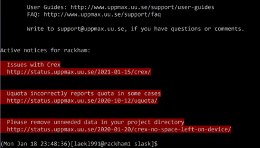

Basic toolkit¶

Objectives
- Let's dig into the most important Bash commands
- We'll do a type-along session
Like videos?
See the YouTube video how to use the command-line on the UPPMAX Bianca cluster.
We will cover these commands¶
Navigation and file management¶
pwdpresent directorylslist contentcdchange directorymkdirmake directorycpcopyscpsecurely remotely copymvmovermremovermdirremove empty directory
Read files and change file properties¶
catprint content on screenheadprint first parttailprint last partlessbrowse contenttarcompress or extract filechmodchange file permissionsmaninfo about a command
File system Navigation¶
pwd — where are you now? “Print name of current/Working Directory`¶
-Pgives you the physical path,- ignores how you got there
ls — list directory contents¶
Type ls to display the contents of the current directory.
-a also shows hidden files and directories.
-l gives you listed and detailed information.
-lt sorts things by time modified.
-r gives reversed order, so in this case newest in last line.
- for complete information about a command.
- TIP:
-$ man <command>works for almost any command!- scroll with arrows and quit with
q.
- scroll with arrows and quit with
cd — Change the shell working Directory¶
- To change directory, use
cd <target>
Warning
- Some of following steps will only be available for the Introduction course members.
- These involve the `/proj/introtouppmax`` directory
Challenge
- Experiment with
cd - Try adding
<spaces>or extra/in various places -
Use tab completion to avoid typos and typing
lsa lot -
Figure out the use of the following:
Solution
-
cd -: goes back to your last directory -
cd ..: goes a level up in the hierarchy -
cd: goes to home directory -
cd ~: also goes to home directory
Copy, Create, Move¶
mkdir — make directories¶
Warning
- Make sure you’re in your home directory by
cd ~
- Create a new directory
uppmax-intro
- Go in there:
cp — copy files and directories¶
- Copy files with:
cp <source> <target> - Set target to
.to keep name and to point at present directory.
- Well, that didn’t work. What does the error say?
- So... try
-r is for recursive, meaning including files and subdirectories!
- Move to your just created
linux_tutorial/
- Make a copy of the file
newfilein the same directory:
scp — secure copy (remote file copy program)¶
- Linux/MacOS: To copy data to/from Rackham, you can use
scp
Download from Rackham¶
- Download
[bob@macbook]$ scp bob@rackham.uppmax.uu.se:~/mydata copyofmydata
[bob@macbook]$ scp bob@rackham.uppmax.uu.se:~/mydata . # (keeping file name)
Example
Download the file first.txt
- In your local terminal:
Upload to Rackham¶
- Upload from present directory on local machine to your home directory on cluster.
- Example:
[bob@macbook]$ scp myinput bob@rackham.uppmax.uu.se:~/copyofmyinput
[bob@macbook]$ scp myinput bob@rackham.uppmax.uu.se:~/ # (keeping filename)
Example
upload the file first.txt after some modification
- Open the file you just downloaded in any editor.
- Add a row, like:
A new row - Save and quit.
- Upload your file but save it as
second.txton Rackham. In your local terminal:
mv — move/rename file¶
- Moving files works just like copying files:
mv <source> <target>- Move the copy you just made to another place:
- Rename it.
Archiving¶
tar — archiving and compression¶
- We’re going to need more files. Let's extract the tar.gz file (tared and gzipped file)
- The flags mean: - v*erbosely - extract - gzipped - f**ilename
- Order of flags may matter!
fshould be in the start or in the end!
- You should see a list of files being extracted
Tip
- To compress use the flag
-cinstead of-x
Deleting¶
rm — delete files or directories¶
Note
- Tip: make "rm" ask if you really want to erase:
- Within a session: Type in the command prompt
- Override asking with
- Do you want this to be the case everytime you start a new session?
- Edit file
.bashrcin /home directory by adding the above alias line on any but the first line.
- Edit file
- These steps will also work for
mvandcp.
-
Deleting files works just like copying or moving them:
rm <target>- Try it out:
- hmmmm...
rmdir — delete an empty directory¶
- We need another command to delete directories
-
Problem again??
-
Is there a way to use rm to delete directories?
Solution
- Recursive commands
-rare applied to directories and their contents
Help¶
man — manual, look up the right flags¶
- Nobody can remember whether it’s
-Ror-rfor recursive, or if-flets you choose a file or forces an action.
- shows you how to use
lsand all its options - Type
/<keyword>to search for a keyword, usen(forward) and ´N` (backward) to scan through hits. - Scroll with arrows.
- Type
qto quit.
Challenge
- Spend some time now to browse the man pages for the commands you’ve just learned!
Let’s get wild with Wildcards¶
- Want to clean out temporary files ending in .tmp in all the subdirectories?
Challenge
- Exercise: Create a new directory and move all .txt files in many_files to it.
Reading files¶
- In Linux, you can (if you wish) also display files without being able to change them
- Hmm, which of these files are useful?
cat - concatenate files and print on the standard output¶

catdumps the contents of files to the terminal as text
- Yummy!
-
What's this????
-
Concatenate files with this wizardry:
- File
ais written first andthe_bestis appended
head — display the top (heading) of a file¶
- You can choose how many lines to display (default 10)
tail — display the end of a file¶
- Tail is the same as head, but for the other end.
- Handy to look at log files or to figure out the structure of a text file.
less — read a whole file¶
- cat doesn’t really work for long files
- Search with
/<keyword>andn/N - Hit
qto quit. - scroll with arrows.
-
manuses `less!“less is more`
History¶
historyshows previous commands- You can rerun earlier commands by:
- copy-pasting and pressing
<enter> !990will run the command of line 990 of lasthistoryoutput.
- copy-pasting and pressing
- Search for earlier commands you just remember parts of:
- history | grep 'jobstats'
File permissions¶
Example¶
$ ls -l
drwxrwxr-x 2 marcusl marcusl 4096 Sep 19 2012 external_hdd
-rwxr-xr-x 1 marcusl marcusl 17198 Jul 16 14:12 files.tar.gz
- Leading symbol:
ddirectory-regular filelsymbolic link (more on this tomorrow)- Others exist, but you can ignore them for now
$ ls -l
drwxrwxr-x 2 marcusl marcusl 4096 Sep 19 2012 external_hdd
-rwxr-xr-x 1 marcusl marcusl 17198 Jul 16 14:12 files.tar.gz
-
Three sets of “rwx` permissions
- rwx: r ead, w rite, ex ecute
- User: the user account that owns the file (usually the one that created it)
- Group: the group that owns the file (usually the project group in /proj/xyz or the user’s group elsewhere)
- Others: everyone else on the system (literally a thousand strangers)
-
r - read
- Files: Read the contents of the file
- Directories: List the files in the directory
-
w - write
- Files: Modify the file
- Directories: Add, rename, or delete files in the directory
-
x - execute
- Files: Run the file as a program
- Directories: Traverse the directory (e.g. with “cd`)
Changing permissions¶
chmod — change file mode bits
If you own, i.e. created, the file or directory, you can modify the content.
Common issues
- Files with
wcan be modified and destroyed by accident. Protect your data! - If you want to share data or scripts with a person not in your project (e.g. support staff like me), you can!
- If you want to keep non-members from even seeing which files you have, you can!
Syntax¶
chmod <mode> <files>
<mode>is of the form: For whom, Modify, What permission(s)- For whom?
u: user/ownerg: group, often the members to a certain projecto: othersa: all- if not set changes are applied for user AND group
- Modify?
+: add permissions,-: remove=: set equal to=usually causes unmentioned bits to be removed except that a directory's unmentioned set user and group ID bits are not affected.
- What permissions?
r,w,x, i.e. the actual permission
Examples¶
-
<mode>can be e.g.:u+x: lets You (owner) run a script you just wrote-w: no write permissions for owner+group- warning: if
wwas already set for others it will be kept!!
- warning: if
+rw: let user and group members read and edit this file, not others if not already set=xw: let group members go into your directory and put files there, but not see which files are there, others are not affecteda=xw: set xw for everyone
-
chmod takes flags as usual, e.g.
-Rfor recursive (i.e. all files and sub-directories therein)
chmod 755 style — binary sum — octal bit mask
-
Online, you will come across e.g.
chmod 755 <file/dir>. What does this mean? It’s an "octal bit mask`: -
Each digit corresponds to the binary sum for the owner, group and others, respectively.
7 = 4 + 2 + 1 = r + w + xAll permissions5 = 4 + 0 + 1 = r + + xRead and execute permission
-
755 then means all permissions for owner, but limiting write permissions for the group and all others
-
What number would
rwbe?
Solution
6
chmod — Hands-on
- In your locally created
linux_tutorialdirectory, find important files and old saved data that you wouldn’t want to lose (imagine). - Directories: important_results/, old_project/
- File: last_years_data
- Use chmod to remove write permission from those files and directories (use the
-Rflag (not-r) to also do the files in the directories). - Take a moment to play around with chmod and explore the effects of permissions on files and directories.
Links¶
- A free online book about Linux: 'The Linux Command Line'.